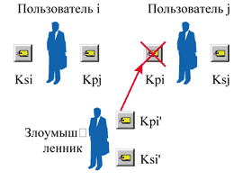
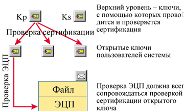
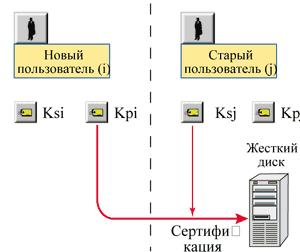
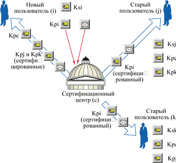
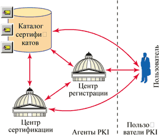
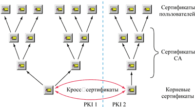

Сергей Панасенко,
начальник отдела разработки ПО фирмы "Анкад"
develop@ancud.ru
Электронная цифровая подпись (ЭЦП), как и любые криптографические алгоритмы с открытым ключом (см. "Современные алгоритмы шифрования", "BYTE/Россия" № 8'2003 и "Цифровая подпись - как это делается", "BYTE/Россия" № 1'2004), удобна для распределения ключей "на лету". Такие алгоритмы защиты особенно актуальны при работе через Интернет: свой открытый ключ можно послать любому адресату непосредственно перед отправкой ему подписанного сообщения (или, что еще удобнее, разместить на каком-либо ресурсе Сети).
Но вспомним тезис, претендующий сегодня на то, чтобы быть аксиомой: "Принципы доступности, удобства, быстродействия и функциональности вычислительной системы антагонистичны принципам ее безопасности" (Медведовский И. Д., Семьянов П. В., Леонов Д. Г. Атака на Internet. М.: ДМК, 2000). Иными словами, за удобство работы в сети придется заплатить существенным ослаблением безопасности. Увы, это утверждение справедливо практически повсеместно. И при использовании ЭЦП, и при асимметричном шифровании появляется риск подмены открытых ключей. Правда, последствия его для данных методов защиты различны: для ЭЦП это подделка подписи, для асимметричного шифрования - возможность расшифровать сообщение, предназначенное легальному владельцу секретного ключа, парного подменяемому.
Сценарий таких действий прост (рис. 1). Предположим, есть два пользователя i и j, каждый из которых имеет по паре ключей, при этом у пользователя j есть открытый ключ Kpi для проверки ЭЦП пользователя i. Далее предположим, что злоумышленник может перехватить этот ключ Kpi в процессе его передачи от пользователя i пользователю j или получить доступ к этому ключу, хранящемуся у пользователя j. В любом случае злоумышленник считает из ключа его реквизиты (например, фамилию владельца, место работы и т. д.) и создаст свою пару ключей - Ksi' и Kpi', в которые запишет известные ему реквизиты пользователя i. Затем он подменит посланный пользователю j открытый ключ Kpi своим фальшивым открытым ключом Kpi', имеющим реквизиты пользователя i.
|  | Рис. 1. Подмена открытого ключа.
|
Любое сообщение злоумышленник будет подписывать своим секретным ключом Ksi' (причем для пользователя j эта подпись выглядит так, как если бы она была поставлена пользователем i). Подпись такого сообщения, проверяемая этим пользователем j, будет верна, поскольку ему был послан фальшивый ключ Kpi', парный столь же фальшивому ключу Ksi'.
Подмена открытого ключа раскроется только после того, как настоящий пользователь i пошлет пользователю j сообщение, подписанное истинным ключом Ksi. Но ситуация может находиться под контролем злоумышленника достаточно долго, тем более что он вполне может заранее оценить необходимое время сеансов связи, проанализировав интенсивность документооборота между пользователями i и j, а также рассчитать время, в течение которого подмена ключа не будет обнаружена. Проблема также существенно усугубляется, если злоумышленник имеет техническую возможность перехватывать сообщения, посылаемые пользователем i пользователю j.
Описанная угроза успешно устраняется путем сертификации открытых ключей. В настоящее время наиболее популярны два основных способа сертификации: двухуровневая и так называемая инфраструктура открытых ключей.
Двухуровневая сертификация
Сертификация ключа - это подтверждение подлинности открытого ключа и хранимой совместно с ним служебной информации, в том числе и о его принадлежности. Данная процедура обычно выполняется путем вычисления ЭЦП сертифицируемого ключа и его реквизитов с помощью специального секретного ключа-сертификата, доступного только сертификационному центру (уполномоченному на данную операцию лицу или организации).
Иными словами, сертификация открытого ключа - это по сути "подписывание" открытого ключа электронной подписью, вычисленной на секретном ключе сертификационного центра (рис. 2).
|  | Рис. 2. Сертификация открытых ключей.
|
ЭЦП открытого ключа в системах с сертификацией ключей - это неотъемлемая часть ключа. Открытый ключ без ЭЦП считается недействительным и не должен использоваться ни в качестве ключа проверки ЭЦП, ни для шифрования сообщений в криптосистемах асимметричного шифрования. При этом открытый ключ в паре с сертифицирующей его ЭЦП часто называют просто сертификатом, или сертификатом ключа.
Открытый ключ сертификационного центра (парный секретному, на котором проводится сертификация других открытых ключей) используется для проверки целостности сертифицированных открытых ключей. Его обычно называют ключом-сертификатом.
Чтобы обеспечить успешную защиту от подмены открытых ключей с помощью их сертификации, необходимо придерживаться следующих несложных правил.
Правило первое: каждый раз, верифицируя ЭЦП какую-либо информацию, необходимо контролировать соответствие сертификации открытого ключа, с помощью которого эта ЭЦП проверяется. Если целостность открытого ключа нарушена (т. е. сертифицирующая ЭЦП открытого ключа неверна), следует считать ЭЦП информации недостоверной, а информацию - подложной, независимо от результатов верификации той ЭЦП, которая относится к информации. Обычно по факту обнаружения открытого ключа с фальшивой сертифицирующей ЭЦП в организациях проводится расследование причин его появления.
Правило второе: защита от подмены ключа-сертификата, с помощью которого проверяется ЭЦП остальных открытых ключей. Обычно с этой целью ключ-сертификат хранят на том же персональном носителе, что и секретный ключ пользователя.
Аналогичным образом необходимо контролировать целостность и принадлежность открытых ключей и при асимметричном шифровании.
Возможны два варианта двухуровневой сертификации: когда имеется третья доверенная сторона и когда она отсутствует.
Отсутствие доверенной стороны
Рассмотрим криптосистему, в которой все пользователи равноправны и используют ЭЦП для контроля авторства и целостности сообщений или документов (рис. 3). Предположим, в системе появился и зарегистрировался новый пользователь, который рассылает всем остальным свой открытый ключ для проверки ЭЦП его сообщений. Каждый из старых пользователей обязан сделать следующее:
- подписать полученный открытый ключ нового пользователя своим секретным ключом и только после этого записать его, например, на жесткий диск ПК;
- используя открытый ключ нового пользователя, каждый раз проверять его ЭЦП с помощью собственного открытого ключа, который в данном случае играет роль ключа-сертификата.
|  | Рис. 3. Сертификация в отсутствие доверенной стороны.
|
Естественно, для двустороннего обмена заверенными сообщениями новый пользователь обязан выполнять аналогичные действия с открытыми ключами старых пользователей.
К сожалению, данному варианту сертификации присущи серьезные недостатки, первый из которых ставит под сомнение возможность распределения открытых ключей "на лету". Дело в том, что никакой защиты от перехвата открытых ключей нет - ведь их сертификация выполняется уже после получения. Поэтому открытые ключи следует передавать из рук в руки. Передача их по сети возможна, но при этом необходимо по обычной (не электронной) почте отправить сопроводительное письмо.
Вся защита открытых ключей от подмены перекладывается на ключ-сертификат, которым служит собственный открытый ключ. Поэтому последний должен храниться на том же персональном ключевом носителе, где и секретный ключ пользователя. Если же злоумышленник сумеет подменить ключ-сертификат, могут пострадать и остальные открытые ключи, сертификация которых проверялась с его помощью.
В принципе при небольшом числе пользователей сети все открытые ключи остальных пользователей можно записать на персональный ключевой носитель (если на нем достаточно памяти). В этом случае их можно не сертифицировать, если криптосистема позволяет применять несертифицированные открытые ключи.
Как уже упоминалось выше, допускается передача открытых ключей и по недоверенной связи (например, по электронной почте). Но тогда одновременно с открытым ключом обязательно нужно послать сопроводительное письмо по доверенной связи (например, заказным письмом). В нем обычно содержится распечатка всего ключа (включая любую хранящуюся в файле ключа дополнительную информацию - реквизиты пользователя, срок действия и т. д.), а также список полномочий пользователя (какого рода документы данный пользователь имеет право подписывать).
После получения открытого ключа (по электронной почте) и сопроводительного письма пользователь визуально или с помощью специального ПО сравнивает соответствие образа присланного ключа с записанным в сопроводительном письме. При любом несовпадении присланный ключ считается недействительным. Если несовпадений нет, проводится сертификация присланного открытого ключа (как описано выше).
Конфликтные ситуации
Предположим, что описанная выше схема не помогла и обнаружился документ, ЭЦП которого при проверке сертифицированным открытым ключом Kpi (см. рис. 3) пользователем j оказалась верна, однако пользователь i впоследствии стал утверждать, что его ЭЦП под данным документом поддельная. Как разрешить данную конфликтную ситуацию?
Прежде всего ЭЦП спорного документа еще раз проверяется открытым ключом Kpi. Если ЭЦП неверна, то считается, что виноват пользователь j, поскольку он либо неправильно интерпретировал результат первой проверки ЭЦП, либо допустил двойную подмену хранящегося у него Kpi (т. е. сначала на фальшивый ключ Kpi', а потом обратно). Если ЭЦП все-таки верна, проверяется соответствие хранящегося у пользователя j ключа Kpi его распечатке в сопроводительном письме. Если ключи не совпадают, то опять-таки виноват пользователь j, поскольку допустил подмену хранящегося у него открытого ключа Kpi. В противном случае считается, что виноват пользователь i, поскольку он либо допустил несанкционированное использование его секретного ключа Ksi злоумышленником, либо просто отказывается от легально подписанного им документа.
Как видно, при использовании сертифицированных открытых ключей достаточно легко найти виновника конфликтной ситуации. Обычно различные средства ЭЦП сопровождаются документацией, разъясняющей пользователям порядок безопасного хранения ключей, их сертификации, разбора конфликтных ситуаций и т. д.
Наличие доверенной стороны
Предположим, что существует некая третья доверенная сторона - центр сертификации ключей (часто его называют также СЦ - сертификационный центр, или УЦ - удостоверяющий центр; последний термин, в частности, используется в отечественном законе об ЭЦП). Назначение СЦ - сертификация открытых ключей всех пользователей системы и распространение сертифицированных открытых ключей.
Рассмотрим процесс сертификации и распространения ключей через СЦ (рис. 4), воспользовавшись тем же примером, в котором в криптосистему добавляется новый пользователь. Последний прежде всего создает персональную дискету с собственными секретным и открытым ключами и сопроводительное письмо (аналогичное тому, что и при сертификации без СЦ). Сопроводительное письмо вместе с открытым ключом по электронной почте пересылается в СЦ. Кроме того, сопроводительное письмо направляется в СЦ обычной почтой или с курьером. В СЦ проверяется идентичность открытого ключа, пришедшего по электронной почте, тому, что находится в сопроводительном письме.
|  |
| Рис. 4. Сертификация открытых ключей в СЦ.
|
После успешной проверки СЦ рассылает сертифицированный открытый ключ нового пользователя и его сопроводительное письмо (подписанное секретным ключом СЦ) всем старым пользователям системы. Такая рассылка из СЦ вполне допустима по электронной почте, поскольку у всех зарегистрированных ранее пользователей есть ключ-сертификат, с помощью которого они могут проверить подпись полученной из СЦ информации.
В завершение процедуры СЦ передает новому пользователю по электронной почте сертифицированные открытые ключи всех пользователей, сертифицированные файлы с полномочиями пользователей и ключ-сертификат. Кроме того, обычной почтой или с курьером ему посылается сопроводительное письмо, содержащее распечатку ключа-сертификата. Пользователь сверяет соответствие ключа-сертификата сопроводительному письму, затем проверяет с помощью ключа-сертификата ЭЦП открытых ключей всех пользователей и файлов их полномочий. Начинать использовать ЭЦП в системе разрешается только при положительном результате всех проверок.
Центр генерации ключей
В описанном выше случае предполагается, что пары ключей генерируются пользователями самостоятельно. Однако их можно создавать и централизованно - в центре генерации ключей (ЦГК). Такой центр чаще всего применяется, если работа с ЭЦП происходит в криптосистеме, действующей в рамках одной организации.
В функции ЦГК обычно входят генерация ключей, рассылка секретных ключей пользователям (только в зашифрованном виде или передачей из рук в руки), а также передача открытых ключей в СЦ. Часто СЦ и ЦГК бывают совмещены (представляют собой одно рабочее место).
Однако следует помнить, что генерация и сертификация ключей - это такие операции, неправильное выполнение которых может пагубно отразиться на безопасности всей системы. Поэтому рабочее место, где размещен СЦ и/или ЦГК, должно соответствовать ряду требований. Во-первых, во избежание вмешательства злоумышленника в процесс генерации ключей или перехвата ключей следует физически отделить данный компьютер от любых сетей. Во-вторых, необходимо установить на нем защиту от несанкционированного доступа и обеспечить контроль целостности запускаемых программ (чтобы злоумышленник не сумел внедрить на нем программные закладки).
Очевидно, что двухуровневая сертификация не лишена некоторых недостатков. Этот подход исключает безопасное применение открытых ключей пользователей, не входящих в замкнутую криптосистему, - необходима процедура регистрации, требующая передачи информации по доверенным каналам связи (например, заказное письмо) или "из рук в руки". Кроме того, необходимо организовать защиту ключа-сертификата от подмены.
Подчеркнем, что описанные в статье схемы - отнюдь не единственно возможные. Существует немало других вариантов подобной сертификации; необходимо лишь убедиться в уровне безопасности того способа, который предполагается использовать, и в его соответствии конкретной криптосистеме.
Инфраструктура открытых ключей
Инфраструктура открытых ключей (Public Key Infrastructure, PKI) представляет собой набор программных агентов и правил, предназначенных для управления ключами, политикой безопасности и собственно обменом защищенными сообщениями. Компоненты структуры PKI (рис. 5) имеют следующее назначение.
|  | Рис. 5. Структура PKI.
|
Каталог сертификатов - это общедоступное хранилище сертификатов пользователей, каждый из которых состоит из открытого ключа, заверенного ЭЦП сертификационного центра, и набора дополнительной информации (реквизиты пользователя и т. д.). Существует общепризнанный международный формат сертификатов, описанный в стандарте X.509 (его можно найти по адресу http://www.ietf.org/rfc/rfc2459.txt).
Центр сертификации (Certification Authority, CA) - организационная единица, назначение которой - сертификация открытых ключей пользователей (т. е. получение из открытого ключа сертификата в формате, определенном в X.509) и их опубликование в каталоге сертификатов.
Центр регистрации (Registration Authority, RA) - другая организационная единица, обеспечивающая регистрацию пользователей системы.
Пользователь в терминах структуры PKI - это владелец какого-либо сертификата (такой пользователь подлежит регистрации) или любой пользователь, запрашивающий сертификат, хранящийся в каталоге сертификатов.
Как известно, открытые ключи вычисляются по определенным алгоритмам из соответствующих им секретных ключей и используются в основном для следующих целей:
- проверки ЭЦП данных или другого открытого ключа;
- шифрования данных, направляемых владельцу секретного ключа, парного открытому: расшифровать данные можно только с использованием данного секретного ключа;
- вычисления ключа парной связи с целью последующего шифрования или расшифровывания данных с помощью алгоритма симметричного шифрования.
Во всех этих случаях совершенно необходимо подтверждение целостности и установление принадлежности открытого ключа конкретному пользователю. Некая третья доверенная сторона (Trusted Third Party, TTP), в данном случае CA, должна подтвердить, что владелец открытого ключа - это именно тот пользователь, информация о котором содержится в сертификате, а также что открытый ключ соответствует секретному ключу данного пользователя.
Таким образом, цифровой сертификат содержит три главные составляющие: информацию о пользователе - владельце сертификата, открытый ключ пользователя и сертифицирующую ЭЦП двух предыдущих составляющих, вычисленную на секретном ключе CA.
PKI подразумевает, что все сертификаты конкретной PKI (а свою PKI может иметь любая организация или компания) организованы в иерархическую структуру (пример иерархии сертификатов двух PKI показан на рис. 6). Иерархическая схема PKI предусматривает существование четырех типов сертификатов.
Сертификат пользователя - описан выше.
Сертификат CA - должен быть доступен для проверки ЭЦП сертификата пользователя и, в свою очередь, должен быть подписан секретным ключом CA верхнего уровня. При этом данную ЭЦП (подписанную секретным ключом CA верхнего уровня) также следует проверять, а потому необходимо, чтобы был доступен сертификат CA верхнего уровня, - и так далее.
Самоподписанный сертификат - корневой для всей PKI. Это по определению доверенный сертификат: если результат проверки цепочки сертификатов CA показывает, что один из них подписан корневым секретным ключом, процесс проверки ЭЦП сертификатов на этом завершается.
Кросс-сертификат можно назвать средством расширения, поскольку он позволяет распространить действие конкретной PKI на другую путем взаимоподписания корневых сертификатов двух PKI.
|  |
| Рис. 6. Иерархия сертификатов.
|
Процедура проверки ЭЦП электронного документа происходит в системе PKI следующим образом. Сначала проверяется ЭЦП конкретного документа, а затем ЭЦП сертификата, с помощью которого проверялась предыдущая ЭЦП. Последняя проверка повторяется в цикле до тех пор, пока цепочка сертификатов не приведет к корневому.
ЭЦП документа признается верной лишь в том случае, если верна не только она, но и все проверяемые в данном процессе ЭЦП сертификатов. При обнаружении неверной ЭЦП любого из сертификатов неверными считаются все ЭЦП, проверенные на предыдущих шагах.
Заметим, что корневых сертификатов может быть несколько: каждая организация (или организационная единица) вправе устанавливать свои корневые сертификаты (один или несколько). Стандартом предусмотрено и наличие корневого сертификата для всего сообщества пользователей Интернета.
Формат электронных сертификатов X.509
В настоящее время для сертификации открытых ключей применяется стандарт X.509 версии 3. В предыдущей, второй, версии отсутствовали расширения, а в версии 1 - еще и ряд дополнительных полей. В X.509 версии 3 определено, что в цифровом сертификате обязательно присутствие следующих полей:
- номер версии формата, которому соответствует сертификат;
- серийный номер сертификата - уникальный номер, присваиваемый каждому сертификату, выпускаемому конкретным CA;
- идентификатор CA, который выпустил данный сертификат (т.е. сгенерировал пару ключей и подписал открытый ключ). Данное поле в паре с предыдущим образуют уникальный идентификатор сертификата;
- срок действия сертификата, указывающий диапазон дат начала и окончания действия данного сертификата;
- персональные данные пользователя, которому принадлежит сертификат, и собственно открытый ключ пользователя;
- расширения формата, код алгоритма, примененного при вычислении сертифицирующей ЭЦП, и сертифицирующая ЭЦП.
Все поля сертификата записываются по принципу TLV (tag-length-value - код-длина-идентификатор), который в настоящее время широко применяется для различных форматных записей, особенно в области коммуникаций.
Отметим также, что в третьей версии X.509 указано, что не следует более издавать сертификаты версии 2, а версия 1 сохраняется только для обеспечения совместимости с существующими приложениями, которые используют сертификаты X.509 данной версии.
Расширения сертификатов
Расширения сертификатов версии 3 существенно увеличивают возможности обработки сертификатов, позволяя уточнить правила и области применения конкретного сертификата и задать необходимые параметры. Приведем лишь основные расширения, предусмотренные стандартом.
Идентификатор ключа CA дает возможность указать конкретный секретный ключ центра сертификации, на котором вычислялась ЭЦП данного сертификата, из существующего набора ключей CA (каждый CA может иметь несколько ключей).
Назначение ключа характеризует область его применения. Фактически в данное поле записана битовая маска, которая определяет одну или несколько возможных целей использования данного сертификата и парного ему секретного ключа. В число возможных вариантов входят вычисление и проверка ЭЦП, шифрование данных, шифрование других ключей, сертификация ключей и т. д.
Альтернативные данные пользователя, как явствует из названия, содержат любую альтернативную информацию о владельце сертификата, например, электронный и IP-адрес и т. д. Значение поля данного расширения может присутствовать наравне с полем "Персональные данные пользователя" основного формата, использоваться вместо него или отсутствовать вообще.
Альтернативное имя CA относится к CA, выпустившему сертификат.
В дополнение к указанным основным расширениям формата стандарт X.509 устанавливает ряд других. Более того, любая PKI-система (например, инфраструктура открытых ключей конкретной организации) может вводить свои расширения, в зависимости от конкретных условий применения цифровых сертификатов.
Списки отозванных сертификатов
Любой сертификат может быть отозван раньше времени окончания срока его действия (что означает запрет на его использование в дальнейшем), как минимум, по одной из двух причин: скомпрометирован соответствующий сертификату секретный ключ или изменились персональные данные владельца сертификата.
Стандарт X.509 предусматривает, что CA регулярно публикуют списки отозванных сертификатов (Certificate Revocation List, CRL), если не используются иные методы приостановки действия сертификатов. CRL может быть и пустым, если в отзыве нет необходимости. Во избежание ложных отзывов сертификатов каждый CRL снабжается сертифицирующей ЭЦП CA, который его выпустил.
Любое PKI-ориентированное приложение в процессе проверки ЭЦП цепочки сертификатов (например, согласно описанному выше алгоритму проверки ЭЦП электронного документа) обязано также проверять отсутствие всех сертификатов проверяемой цепочки в текущих CRL. В случае обнаружения отозванного сертификата все ЭЦП, проверенные на предыдущих шагах, считаются неверными.